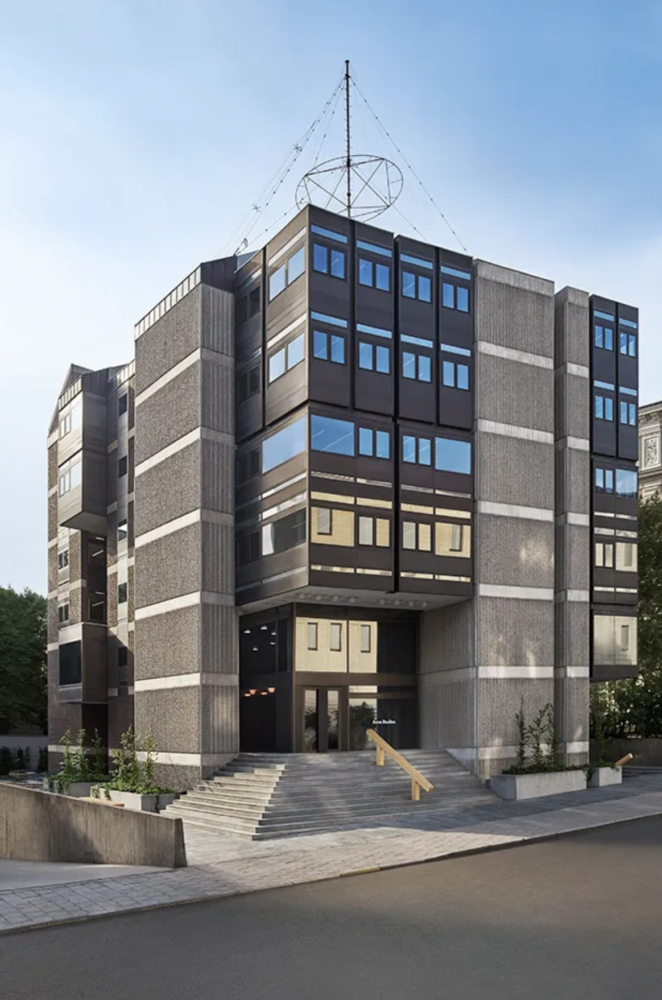
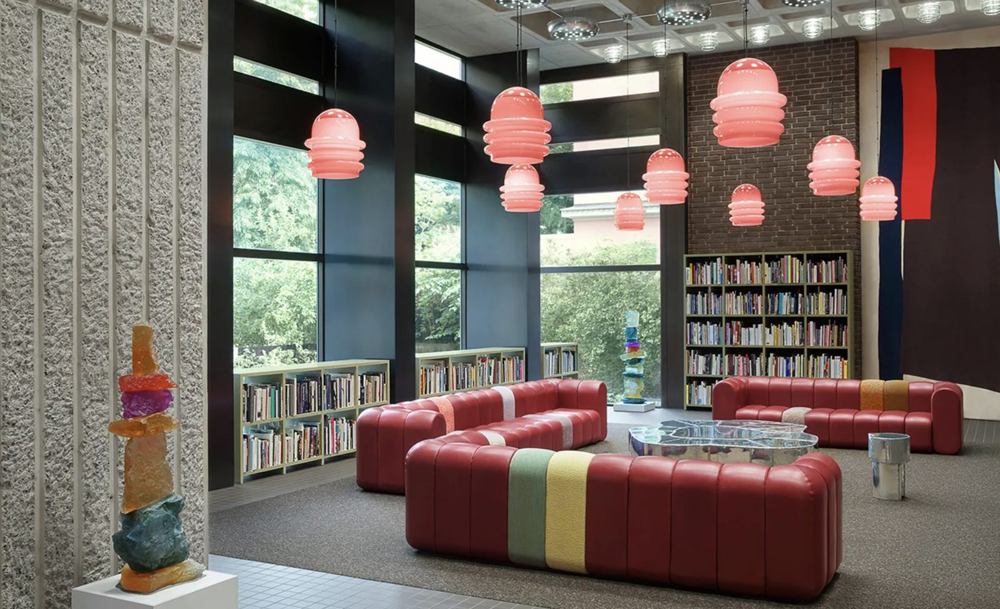

Acne Studios Digital Experience Redesign
Introduction (Context + Brief)
Almost 5 years ago, I had the privilege to lead a talented team to redesign Acne Studios website. Today it still gets referenced and I often get asked about the project therefore I wanted to write a walk through of the process that went into this successful and fun project. Here it goes:
In 2019, following a rebrand, I led Acne Studios’ e-commerce overhaul, blending brutalist design, modern technology, and Johnny Johansson’s creative direction. While Acne Studios' digital presence already stood out amongst the fashion players, the goal was to push it even further: making it faster, simpler, and deeply aligned with the brand's artistic DNA.
With the rebrand extending to our logo, packaging, it was a natural step to refresh digital design and the e-commerce platform. I guided the transformation, focusing on performance-driven architecture and a user-centered design experience.
My Role
Prior to taking on this challenge, I already had experience in driving Acne’s digital product roadmap, combining both digital design and tech leadership. Having taught myself to code and design websites since I was 11, I was incredibly excited to take on this project and drive it from both a design and a tech perspective for my favorite brand.
With my hybrid skills, I was able to drive the project from the inception to launch without needing to hand it off to any other team. This allowed me to guide the project through each phase, making sure the design was experienced as a seamless integration with technology - a natural approach for a project inspired by brutalism. In fact our HQ was (and still is) located in a renovated brutalist building, which I believe played a role in shaping our design philosophy.
We had previously successfully refreshed the look and feel in 2019, which was referenced (and copied) a lot by other contemporary and luxury brands. We were, however, already a step ahead and working on the next thing.


photos from our beautiful HQ office in Östermalm, Stockholm, Sweden, a brutalist building formerly the Czechoslovakian Embassy
our site before the redesign. We often introduced micro-animations and special digital effects to express the current collection
Goals & Challenges
We were living in our own bubble, and from our perspective, we thought our website could be much faster. We were dealing with technical debt—what we referred to as "spaghetti code"—that had accumulated over time, making it slower to develop and launch new features. As a result, even small improvements were taking longer to implement. I presented this challenge to our senior leadership, framing it as the perfect moment to overhaul our tech stack alongside the rebranding. This was a rare opportunity to leap ahead of other luxury players, many of which had yet to invest in their digital flagship stores. At Acne, senior leadership always understood the importance of making investments in our e-commerce, knowing how crucial it was for the brand’s future.
Our goals for this project were clear:
✿ Representation: Ensure the brand identity is expressed consistently across the digital experience through digital design and ecommerce photography
✿ Speed: Eliminate technical debt to dramatically increase website speed. Make the website FAST and make sure to maintain it in a modern way (no jQuery)
✿ Simplicity: Reduce friction in the customer journey by minimizing steps and distractions
The Team
I was fortunate to have an absolute star team who were as driven as me to work together to bring this project to life. They were all incredibly talented, and we spent countless hours together in a meeting room going through each pixel. My team consisted of:
✿ A talented UX Designer who was responsible for research, wireframing, user testing. Her Korean roots also brought views of a region that was important for the brand.
✿ A senior front-end engineer who was the most talented engineer I had the pleasure to hire and work with over the years. He was very meticulous about clean code and web performance, and making sure the team developed with components.
✿ Two digital graphic designers with exquisite taste in visual storytelling, one of them more experienced in traditional graphic design while the other embraced new digital media like 3D and special effects.
✿ A freelance graphic designer who was also able to code. He brought a lot of new ideas and a technical way of designing, which I really liked.
✿ A great content manager who worked tirelessly to setup the CMS and different translations.
We also had the following contributors to the project:
Visual merchandisers, head of studio, head of customer service, head of retouching, head of analytics, and of course our sponsors—the chief commercial officer and the ecommerce director.
Design Approach (Inspiration + Process)
I cannot share all the details, but if you look at the finished website this is what might make you think:
✿ Simple and Modern
✿ An “Undesigned” Design
✿ CCTV — an abstract keyword that would later evolve into a symbol of realism, focusing on the everyday view of the world.
✿ User-Friendly across all backgrounds.
After all, our team was entrusted with creating a modern web experience that aligned with the brand’s essence. With this in mind, we began our research, benchmarking, and sketching the first initial designs.
One important directive I gave my team was: "Look at other fashion players, but don’t copy them. We can be better, and we can be different." We aimed to innovate, drawing inspiration from the simplicity of the websites of the 90s-2000s era and also modern software: such as the speed of apps compared to websites, and operating systems like iOS and macOS. We asked ourselves, "What shopping experience would we prefer as customers?" Speed was important: our users wanted a seamless experience without too much tapping or clicking.
Equally important, we had to ensure that the visual language developed by the Marketing team—with the logo, typefaces, and packaging—was consistently reflected in our digital design. The brand must be represented consistently across all touchpoints.
Our 1st designs weren’t quite there yet. We thought they were good, but when we reviewed them with the creative leadership, he pointed out areas that didn’t align with his vision. One element, however, stood out to him: the navigation that referenced Excel. While some panicked, I was confident we had gathered enough input to refine our approach.

navigation referencing the cells in Microsoft Excel and Craigslist.com

we referenced simpleness of IRC chatrooms

we referenced craiglist.com a systemic design that has not changed for many years
To gain fresh perspectives, I brought in a freelance designer with a background in both design and development. His technical understanding of how design impacts development proved invaluable, and we began sketching alongside the Marketing team to merge both brand and digital design. This collaborative process was the key to achieving a stronger visual direction.
By the 2nd design review, we had narrowed down the look and feel significantly. The third review featured a much fuller design. One of the brutalist options, which used Times New Roman, was deemed “too cool” by the creative leadership. Ultimately, we selected the design that resonated.
Now, we were ready to move forward—just one more step: delivering the full designs, developing them, and launching. Easy, right?

Product Detail Page mock-up
Development & Collaboration
Building the Architecture
We had the most fantastic design, and now it was time to bring it to life. I was tasked with leading the development process while finalizing the full design delivery. These phases ran in parallel. I took on the role of Product Owner, leading both the design and development tracks, with our senior front-end developer owning the front-end architecture setup.
Agency Collaboration
We brought in a talented local development agency to support the build. We worked closely with a brilliant Salesforce architect and several front-end developers. Our ask was clear: build a modern website, inside and out—without compromising on design. Every detail needed to be pixel-perfect.
The Back-and-Forth
For months, it was a dance between dev and design: delivering designs, handing them off for implementation, reviewing builds, reworking components, more reviews—followed by QA, sign-offs, and sometimes, back to design again. It was iterative and intense.
Quality Control Battles
We faced quality issues more than once. Despite clear guidance from our lead front-end engineer, the output from the agency didn’t initially meet our expectations. I had to advocate persistently for the level of polish we aimed for. It wasn’t always easy, but in the end, we got what we wanted. It just took consistent pressure and high standards.
COVID Impact
Midway through the project, the pandemic hit. Naturally, priorities shifted, and there were moments when the project couldn’t be the focus. But once things settled, we regrouped—this time fully remote—and pushed forward. This also meant that the project took us 2 years from beginning to finish — it would have been faster, but it is what it is. Figma's collaborative feature made it easy working from home.
Last Touches
I knew we were missing something before the launch. I wanted the launch to feel like a moment—and since we often created special animations and effects for collection drops, it made sense to do the same for our new website. Because we had heavily referenced ASCII in our designs, I envisioned the website appearing to users through ASCII art.
I found an artist who taught creative coder who was happy to pitch in. He developed a special animation where the website fades in, made out of ASCII—composed entirely of the letters in "Acne Studios."
We were all into art, design, and super geeks at heart—having the best time!
Our mobile site with the ASCII effect. It only loaded once the user visited the page the very first time. It disappeared like a weird computer glitch.
Launch
On Launch Day we all started the day at 6am. We were nervous and excited at the same time. There was no time for celebration yet—launching a new website is always bumpy, and we needed all hands on deck. The maintenance page went up, and every item in our launch plan showed green.
Once the site was stabilized, We stayed in close contact with Customer Service to monitor any potential issues. The entire week was about squashing bugs and keeping a close eye on performance.
By the end of the week, the website was stable, and we had zero major complaints. Internally, everyone loved the new experience.
Reception + Metrics
The website was a big success.
✿ We increased performance 3×.
✿ Reduced clicks and steps across key journeys, impacting conversion by +26%.
✿ Introduced a modular design system.
✿ The design was UX-driven, backed by extensive user testing.
✿ We drew inspiration from the early Web 1.0 era (1990–2000) and ASCII electronic communication (remember IRC?).
✿ We all learned a lot, and I’ve carried this project with me as a gold standard for how to successfully redesign a brand’s website.
Takeaways
Talent Over Prestige
A talented team matters. The people who choose to be in your team can represent the kind of talent you need to build successful digital products. You don’t need to hire a very expensive design agency if you’ve assembled a strong team with a clear vision.
Plan for the Unknown
There are always unknowns and unexpected challenges in development. Plan for them. Add at least a 20% buffer when projecting a launch date.
Art, Not Imitation
Don’t copy competitors. Innovation doesn’t come from copying others—especially in fashion and luxury, where most websites look the same. Get inspired by artists, museums, and digital innovators. They’re out there, and they’re doing exciting things.
Stay Calm, Stay Curious
Stay calm and carry on. I’ve often been told I stay calm under pressure—and it’s because I trust the team. We can solve anything.
What if the website crashes on launch day? We’ll fix it.
What if the creative leadership doesn’t like our design? We’ll go back and create something he will.
I always encouraged everyone to contribute, speak up, and trust that we’ll figure it out—even if things take a detour.
And if there’s one thing I took from Brutalism in web design, it’s that less is more. Cut features, not impact.
We celebrated with the entire company on our terrace that summer, and we made a T-shirt for the project with the word “FRESH” in ASCII—alongside the website’s mobile and desktop design. We called the project FRESH internally, and we were all proud to have contributed to it.
I got to work with some of my closest friends. It was a great moment celebrating the success of the project and our friendship at the same time.
E-commerce shouldn’t just convert — it should connect. Through digital design, brands have the power to tell stories that resonate.

Even our 404 page carried the ASCII motif.

The e-gift card page, rendered in the same ASCII style.

The size guide page, translating garment measurements into clear, minimal diagrams.

The "FRESH" T-shirt we made for the team: the back carries the site's ASCII loading animation, the front reads "FRESH" in ASCII.